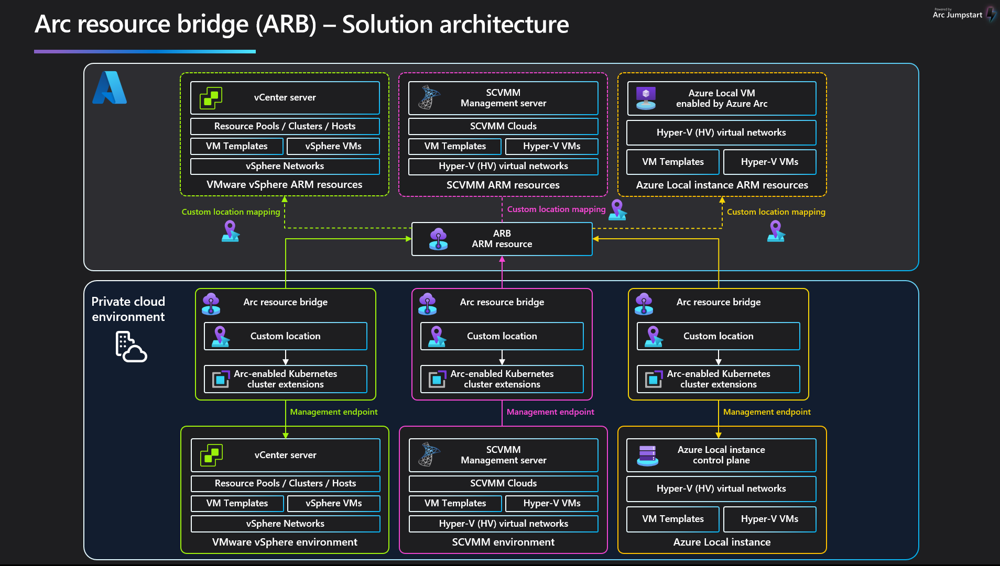
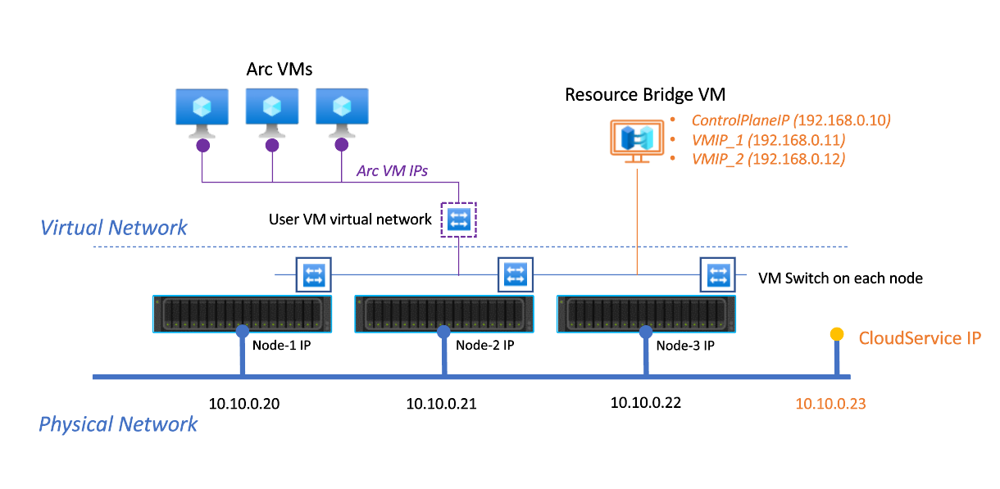
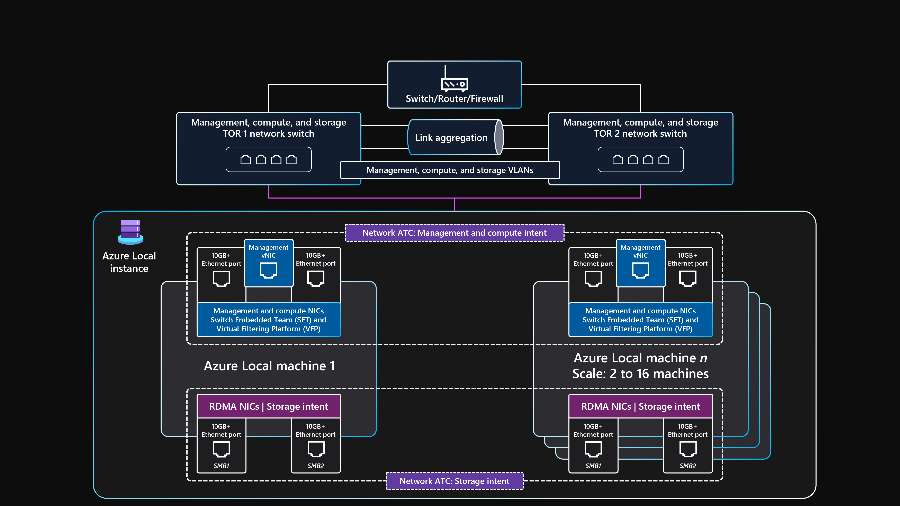
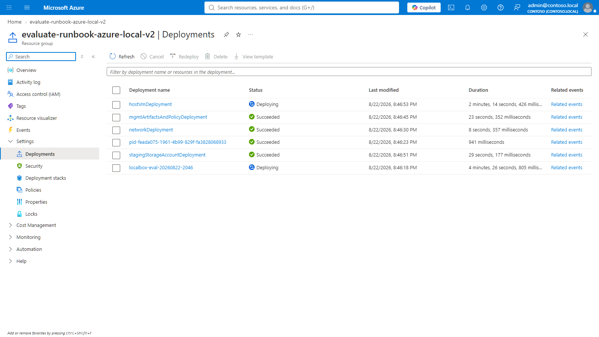
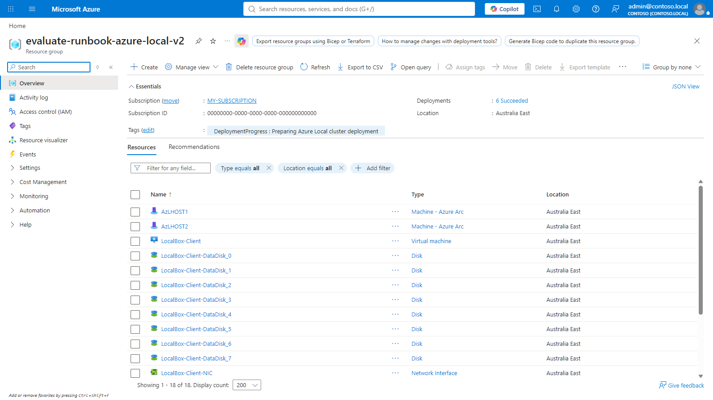
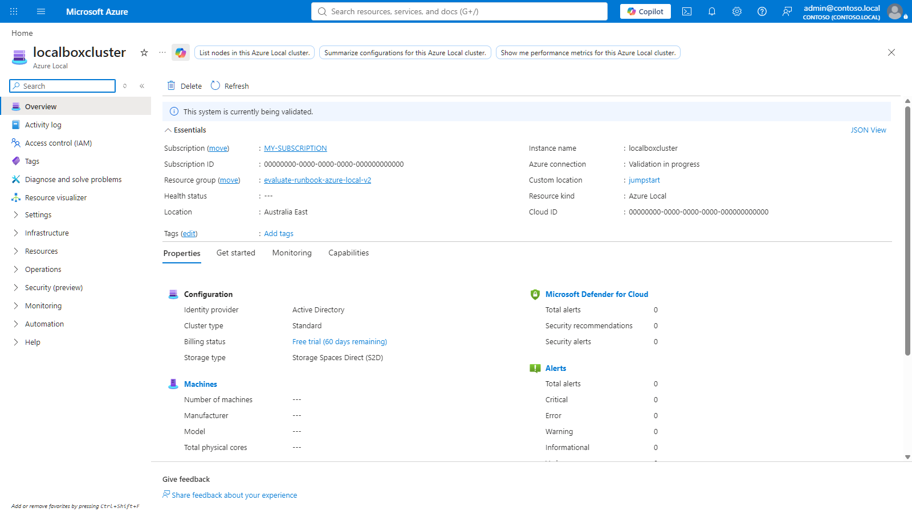
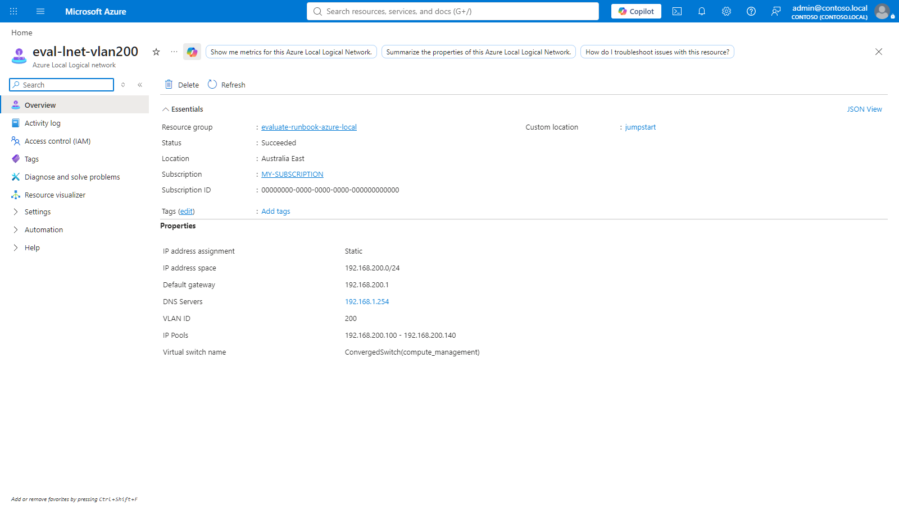
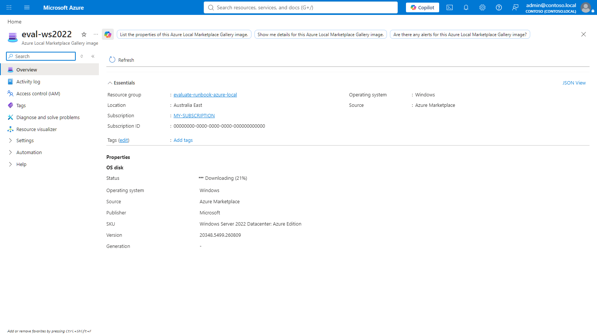
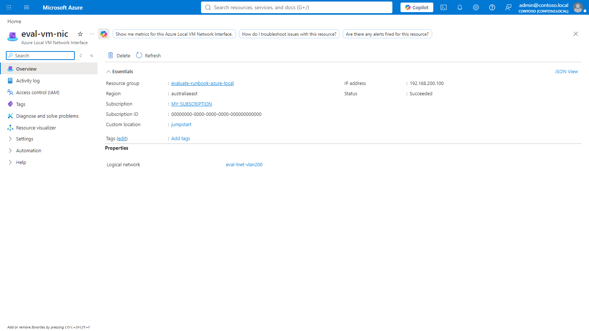
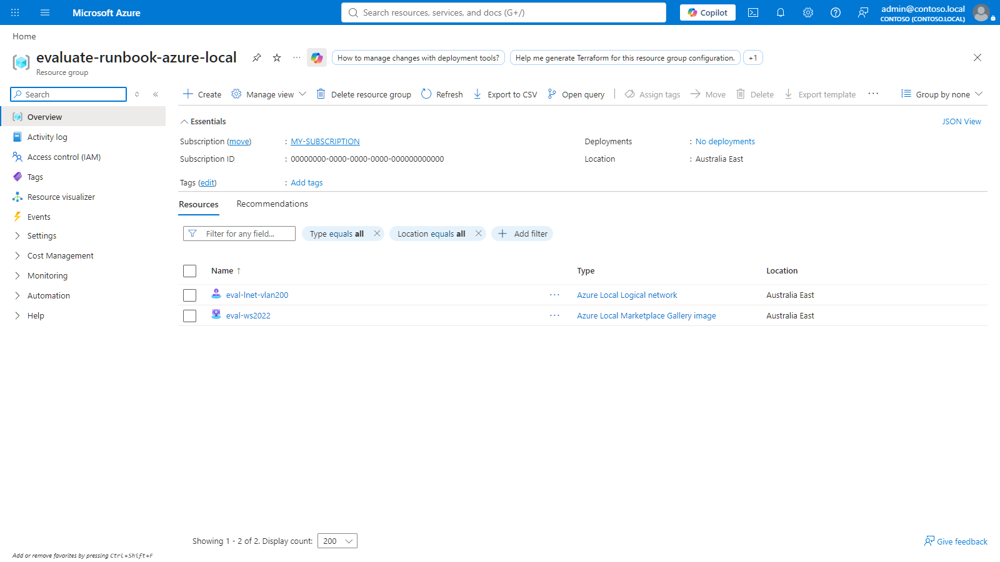

1. Deployment guidance
Read this before running anything. It is the shape of the work, not the commands.
The rest of this document is a runbook: procedures, commands, and the errors they produce. This section is different. It exists to set expectations, because most of the trouble with Azure Local comes from a wrong mental model rather than a wrong command.
The one idea that prevents most confusion
provisioningState answers “did Azure record this?”, not “is it alive?”
Three separate examples of the same trap, each of which is covered later:
| Resource | Misleading field | Field that actually matters |
|---|---|---|
| Arc resource bridge | provisioningState: Succeeded | status: Running |
| Azure Local instance | provisioningState: Succeeded | connectivityStatus: Connected |
| ARM deployment | Succeeded | Whether the instance reports nodes |
Judge readiness by runtime state, and when a runtime field is ambiguous, judge by the age of the last report. A component that has not spoken to Azure in hours is not slow, it is gone.
Decide these before you start
| Decision | Why it is hard to change later |
|---|---|
| IP pool range on the workload logical network | Pools cannot be added or resized afterwards. Changing one means deleting the network and everything attached to it. |
| Which resource group receives images | Each one needs its own role assignment. Deployment only grants it on the group it deployed into. |
| Addresses reserved outside the pool for load balancers | Overlap causes intermittent failures that are painful to trace. |
| A maintenance window long enough for the whole run | Interrupting deployment does not pause it. It ends it. |
What the whole path looks like
| Stage | You are done when | Covered in |
|---|---|---|
| Prerequisites | Providers registered, roles assigned | Section 3 |
| Deployment | Instance Connected, bridge Running, custom location exists | Section 4 |
| Networking | Logical network has an IP pool | Section 7 |
| Images | Image reports 100 percent | Sections 8 and 9 |
| Workloads | VM has an address from the pool | Sections 10 and 11 |
2. Architecture overview
Knowing which component owns which responsibility explains almost every failure mode in this runbook.
Azure Local is not simply a cluster that reports into Azure. Since version 2311.2 it is an Arc-enabled solution: the operating system forms the base layer, and the Arc components plus the Lifecycle Manager sit on top, shipped together as one validated solution. That packaging is why individual components must not be patched out of band, and why deployment has so many discrete stages.
Azure Arc resource bridge: the control plane
The resource bridge is a lightweight Kubernetes appliance running on your own hardware. It is what allows Azure Resource Manager to project and manage on-premises resources. When you create a VM from the portal, ARM does not talk to Hyper-V directly: it writes an ARM resource, and the bridge reconciles that intent locally.

Two consequences follow directly from this design, and both explain symptoms covered later:
- The Azure resources you see are projections. If the appliance becomes unhealthy, Azure loses visibility and management even though the workloads keep running on-premises.
- The bridge needs ongoing maintenance. Microsoft states that solution updates must be applied within one year to keep certificates valid and Azure Local VM functionality working.
Custom location: where resources are actually placed
The bridge alone is not enough. A custom location is the deployment target that extends an Azure region onto your hardware. Creating a VM image, a logical network, or a VM means passing a custom location ID instead of an Azure region. If it does not exist, those resources have nowhere to land, which is exactly why the portal blade appears empty.
Networking: logical networks and the management network
Workload VMs and AKS node VMs take addresses from an Azure Local logical network, while the resource bridge and platform services use the management network defined at deployment time. These are frequently different VLANs, which makes cross-VLAN reachability a common source of AKS failures.


Reserved ranges you must design around
Two ranges are used internally by the Kubernetes platform behind both the resource bridge and AKS. No infrastructure address, and no private endpoint that AKS must reach, may live inside them, because traffic to those addresses never leaves the cluster.
| Reserved range | Used for |
|---|---|
| 10.96.0.0/12 | Kubernetes internal services (cluster IPs) |
| 10.244.0.0/16 | Kubernetes pod networking |
How the pieces line up
| Component | ARM resource type | Created by | Blocks what if missing |
|---|---|---|---|
| Azure Local instance | Microsoft.AzureStackHCI/clusters | Deployment | Everything |
| Arc resource bridge | Microsoft.ResourceConnector/appliances | Deployment | All VM management |
| Custom location | Microsoft.ExtendedLocation/customLocations | Deployment | All VM management |
| Storage path | Microsoft.AzureStackHCI/storageContainers | Deployment | Image and VM placement |
| Logical network | Microsoft.AzureStackHCI/logicalNetworks | You | VM networking, AKS |
| VM image | marketplaceGalleryImages / galleryImages | You | VM creation |
3. Azure prerequisites
Done once per subscription. A missing provider surfaces much later as an error that looks unrelated.
az provider register --namespace Microsoft.AzureStackHCI az provider register --namespace Microsoft.HybridCompute az provider register --namespace Microsoft.HybridConnectivity az provider register --namespace Microsoft.ExtendedLocation az provider register --namespace Microsoft.ResourceConnector az provider register --namespace Microsoft.KubernetesConfiguration az provider register --namespace Microsoft.EdgeMarketplace
Confirm every provider reports Registered before continuing:
$providers = 'Microsoft.AzureStackHCI','Microsoft.HybridCompute',
'Microsoft.ExtendedLocation','Microsoft.ResourceConnector',
'Microsoft.EdgeMarketplace'
$rows = foreach ($p in $providers) {
$state = az provider show -n $p --query registrationState -o tsv
[pscustomobject]@{ Provider = $p; State = $state }
}
$rows | Format-Table -AutoSize
SubscriptionNotRegistered, and the timing makes
it look like a cluster problem.
Role assignments
- Azure Connected Machine Onboarding and Azure Connected Machine Resource Administrator on the resource group where machines are registered.
- Azure Connected Machine Resource Manager granted to the
Microsoft.AzureStackHCIresource provider application, on the resource group where images are downloaded.
$spId = az ad sp list --display-name "Microsoft.AzureStackHCI" --query "[0].id" -o tsv az role assignment create ` --assignee-object-id $spId ` --assignee-principal-type ServicePrincipal ` --role "Azure Connected Machine Resource Manager" ` --scope "/subscriptions/$sub/resourceGroups/$rg"
Verify it before attempting any image download:
az role assignment list ` --assignee $spId ` --scope "/subscriptions/$sub/resourceGroups/$rg" ` --query "[].roleDefinitionName" -o tsv
Azure Connected Machine Resource Manager is the only built-in role that carries
Microsoft.EdgeMarketPlace/offers/generateAccessToken/action, which is the permission the download
actually needs. Broad roles such as Owner or Contributor do not include it, so escalating privileges is not a
workaround.
4. Deploying Azure Local, and watching it happen
What the deployment actually does, how long each phase takes, and the one action that destroys it.
What you are deploying
Azure Local is not created by a command. There is no az call that produces an instance from
nothing. What exists first is hardware: machines running the Azure Local operating system, registered
individually with Azure Arc. Deployment is the process that takes those registered machines and turns them
into a cluster with a control plane attached to Azure.
| Phase | What happens | Where it runs | Observed duration |
|---|---|---|---|
| 1. Azure scaffolding | Network, storage, workspace, host | ARM | ~11 min |
| 2. Build | Nodes created, domain, cluster object | Inside the host | ~1 h |
| 3. Validation | ~20 checks: network, storage, AD, Arc | On the nodes | ~25 min |
| 4. Cluster deployment | Storage Spaces, Arc bridge, custom location | On the nodes | 1–3 h |
Before you start
| Requirement | Why it bites later if missed |
|---|---|
Machines registered with Arc, reporting Connected | Deployment has nothing to build on. |
Resource providers registered, including Microsoft.EdgeMarketplace | Surfaces hours later as an image download failure that looks unrelated. |
Azure Connected Machine Resource Manager on the resource group | Image downloads fail with Forbidden. See section 3. |
| DNS that resolves the cluster domain | Validation fails at the DNS stage, late in the run. |
| Time synchronisation | Domain join and certificate operations fail in confusing ways. |
| A maintenance window measured in hours | See the warning below. This is the one that ends deployments. |
Connected, the cluster object still exists — and nothing continues. The instance sits at
DeploymentInProgress permanently.
The tell is a timestamp, not a status. Compare when the cluster last reported against the current time. A healthy deployment reports every few minutes:
$c = az resource show -g $rg -n <CLUSTER> `
--resource-type Microsoft.AzureStackHCI/clusters --api-version 2024-04-01 -o json |
ConvertFrom-Json
$last = $c.properties.reportedProperties.lastUpdated
$age = ((Get-Date).ToUniversalTime() - [datetime]$last).TotalHours
"status: $($c.properties.status)"
"last reported: {0:N1} hours ago" -f $age
status still reads DeploymentInProgress, means the orchestrator is gone and the run
will never finish. There is no resume. Redeploy.
Why a lab deallocates itself mid-deployment
This is worth calling out because the cause is not obvious and the effect is severe. Deployment automation writes progress into a tag on the resource group and the host. It writes that tag by replacing the tag set rather than merging into it, so any governance tags applied at deployment time are removed. In a subscription with cost automation, a host that has lost its cost-exemption tag becomes a candidate for shutdown.
The evidence is a straight comparison within one resource group:
| Resource | Written to by the deployment? | Tags afterwards |
|---|---|---|
| LocalBox-VNet | No | CostControl, SecurityControl, Project |
| LocalBox-Client | Yes, progress tag | DeploymentProgress only |
CostControl once the host is already stopped does not save the deployment, because the
deployment is already dead. Start-Lab.ps1 in this repository reapplies the tags first for exactly
this reason, but the useful time to run it is before a long deployment, not after one fails.
Watching it without opening a session on the host
At resource group level the deployment simply reports Running. The detail lives inside the
deploymentSettings child resource:

Succeeded is not a signal that you
can create VMs.
The numbers make the gap obvious. Six ARM deployments cover the entire Azure-side scaffolding and finish in about eleven minutes. The build that follows takes hours and adds nothing to that list.
Track the build without opening a session on the host
The build does report itself, just not through ARM. It writes a running description into a tag on the resource group, which makes progress a one-line query:
az group show -g $rg --query "tags.DeploymentProgress" -o tsv
| Tag value | Meaning |
|---|---|
| Preparing Azure Local cluster deployment | Nodes built and registering with Arc |
| Validating Azure Local cluster deployment | Pre-deployment validation running |

DeploymentProgress tag in the
Essentials panel, which is the cheapest progress signal available.
The cluster resource appears before the cluster exists

This is the moment most likely to mislead. The resource exists, so the instinct is to start creating VMs. Judge readiness by the status field instead:
az resource show `
-g $rg -n <CLUSTER> `
--resource-type Microsoft.AzureStackHCI/clusters --api-version 2024-04-01 `
--query "{status:properties.status,connectivity:properties.connectivityStatus}" -o json
| status | connectivityStatus | Can you create VMs? |
|---|---|---|
| ValidationInProgress | NotYetRegistered | No |
| ConnectedRecently | Connected | Yes, once the bridge is Running |
validationStatus lists around twenty finely grained checks and completes first.
deploymentStatus then appears as a single long-running step, so the stage list stops being a
useful progress bar once deployment begins. Fall back to the cluster status field and the
DeploymentProgress tag for that phase.
Needs attention is the expected state while validating
In resource lists the instance shows a red Needs attention long before anything is wrong. It is driven by connectivity, and a system that has not finished building has never connected. Comparing a validating instance against a healthy one shows which field actually carries the signal:
| Field | Still validating | Healthy | Useful? |
|---|---|---|---|
| connectivityStatus | NotYetRegistered | Connected | Yes, this drives the portal label |
| status | ValidationInProgress | ConnectedRecently | Yes |
| reportedProperties.nodes | null | 2 nodes | Yes |
| provisioningState | Succeeded | Succeeded | No, identical in both |
Needs attention during deployment carries no information. It becomes meaningful once
status settles: ValidationFailed is a real failure, while
ValidationInProgress simply means the work is still running.
When both ARM and the extension report success but nothing was built
Because the build happens inside the host, a failure there does not travel back to ARM. Both the deployment and
the bootstrap extension can read Succeeded while the cluster was never created. The evidence is in
the logs on the host, not in Azure.
$f = "$env:TEMP\tail-log.ps1"
@'
Get-ChildItem C:\LocalBox\Logs -File |
Sort-Object LastWriteTime -Descending |
Select-Object -First 6 |
ForEach-Object { "{0} {1}" -f $_.LastWriteTime.ToString("HH:mm:ss"), $_.Name }
Get-Content C:\LocalBox\Logs\New-LocalBoxCluster.log -Tail 25
'@ | Set-Content -Path $f -Encoding ascii
az vm run-command invoke `
-g $rg -n <HOST_VM> --command-id RunPowerShellScript `
--scripts "@$f" --query "value[0].message" -o tsv
azcopy, which is installed separately by a package-manager
provisioning task. When the build starts first, every download fails with
The term 'azcopy' is not recognized, and the run aborts reporting a missing VHD, which points at
storage rather than at the real cause.
Compare timestamps across the logs and the ordering is unmistakable:
| Time | Event |
|---|---|
| 13:57 | Bootstrap finishes |
| 13:58 | Logon script starts |
| 13:59 | Build calls azcopy and fails |
| 14:05 | Package provisioning finishes, installing azcopy |
The abort message names the symptom, not the cause. Chasing it leads to storage and permissions, when the fix is simply to run the build again once the tooling exists:
Get-Command azcopy # confirm it resolves before retrying Start-ScheduledTask -TaskName LocalBoxLogonScript
$sub = "<SUBSCRIPTION_ID>"
$rg = "<RESOURCE_GROUP>"
$cluster = "<CLUSTER_NAME>"
$id = "/subscriptions/$sub/resourceGroups/$rg/providers/" +
"Microsoft.AzureStackHCI/clusters/$cluster/deploymentSettings/default"
$d = az resource show --ids $id --api-version 2024-04-01 -o json | ConvertFrom-Json
# The stage data lives under reportedProperties, not directly under properties
$validation = $d.properties.reportedProperties.validationStatus
$deployment = $d.properties.reportedProperties.deploymentStatus
"validation: $($validation.status) deployment: $($deployment.status)"
$validation.steps |
Select-Object fullStepIndex, name, status |
Format-Table -AutoSize
properties.deploymentStatus returns null, because the field sits at
properties.reportedProperties.deploymentStatus. The shallow path does not error, it simply comes
back empty, which reads as "no stages yet" at any point in the deployment and hides the entire stage list.
Two separate lists are reported. Validation runs first and is finely grained; deployment follows and is summarised as a single long-running step until it completes.
| fullStepIndex | Validation stage | Status |
|---|---|---|
| 0 | Remote Management | Success |
| 10 | Connectivity | Success |
| 20 | External Active Directory | Success |
| 50 | Network Configuration | Success |
| 90 | Arc Integration | Success |
| 120 | Local Identity Validation | Skipped |
| 150 | Add hosts to domain and create cluster object | Success |
| 170 | Cluster Validation | Success |
| 190 | Storage Validation | Success |
Skipped. Only Error warrants
action. Each entry also carries startTimeUtc and endTimeUtc, which is the most
reliable way to see where time is actually going.
Unknown simply have not started yet.Failed indicates a problem. A two-node deployment
typically takes around two and a half hours, and the Arc infrastructure stage alone can run for tens of minutes.
5. Diagnosing the empty VM blade
The portal shows two different messages for this condition, and one of them is misleading.
Decision tree
| Check | Where | What it means if wrong |
|---|---|---|
| Deployment finished? | deploymentSettings/default | A stage is still InProgress. Wait; do not intervene. |
Resource bridge Running? | Microsoft.ResourceConnector/appliances | WaitingForHeartbeat means the appliance has not reported to Azure yet. |
| Custom location exists? | Microsoft.ExtendedLocation/customLocations | The VM control plane has not been created. |
| Workload logical network exists? | Microsoft.AzureStackHCI/logicalNetworks | Only the InfraLNET exists, which is reserved for infrastructure. |
| VM image exists? | az stack-hci-vm image list | Create VM has nothing to offer in the image list. |
Connected with OS 24H2. That only means the Connected Machine agent
is running. VM capability is governed by the resource bridge and the custom location.
6. Verifying the control plane
One block that confirms every layer 2 and layer 3 resource actually exists.
$sub = "<SUBSCRIPTION_ID>"
$rg = "<RESOURCE_GROUP>"
$all = az resource list --subscription $sub -g $rg -o json | ConvertFrom-Json
$want = 'Microsoft.ResourceConnector/appliances',
'Microsoft.ExtendedLocation/customLocations',
'Microsoft.AzureStackHCI/logicalNetworks',
'Microsoft.AzureStackHCI/storageContainers',
'Microsoft.AzureStackHCI/galleryImages',
'Microsoft.AzureStackHCI/marketplaceGalleryImages'
$all |
Where-Object { $want -contains $_.type } |
Select-Object name, type |
Sort-Object type |
Format-Table -AutoSize
| Resource | Type | Healthy value |
|---|---|---|
| <cluster>-arcbridge | appliances | Running |
| <custom-location> | customLocations | Succeeded |
| <cluster>-InfraLNET | logicalNetworks | Succeeded |
| UserStorage1 / UserStorage2 | storageContainers | Succeeded |
provisioningState can read Succeeded while
status is still WaitingForHeartbeat. The runtime status is what gates VM creation.
az resource show ` --ids "/subscriptions/$sub/resourceGroups/$rg/providers/Microsoft.ResourceConnector/appliances/<CLUSTER>-arcbridge" ` --api-version 2022-10-27 ` --query "properties.status" -o tsv
7. Logical networks and IP pools
The automatically created InfraLNET is not for workloads, and a network without an IP pool will break AKS.
After deployment you normally have a single logical network whose name ends in -InfraLNET.
It belongs to the Arc resource bridge and typically exposes only a couple of usable addresses. Workload VMs
and AKS nodes need their own logical network.
$cl = "/subscriptions/$sub/resourceGroups/$rg/providers/" +
"Microsoft.ExtendedLocation/customLocations/<CUSTOM_LOCATION>"
az stack-hci-vm network lnet create `
--resource-group $rg `
--custom-location $cl `
--location <REGION> `
--name <LNET_NAME> `
--vm-switch-name '"ConvergedSwitch(compute_management)"' `
--ip-allocation-method static `
--address-prefixes 192.168.200.0/24 `
--gateway 192.168.200.1 `
--dns-servers <DNS_IP> `
--vlan 200 `
--ip-pool-start 192.168.200.11 `
--ip-pool-end 192.168.200.60
LogicalNetworkValidation ... does not have an ippool. The pool cannot be added later, because
az stack-hci-vm network lnet update does not expose those parameters. Fixing it means deleting
and recreating the network, which also means removing anything attached to it.
Sizing the pool
Microsoft gives a formula for AKS clusters:
IPs per cluster = controlPlaneNodeCount + workerNodeCount + 2 + loadBalancerIPs
The + 2 covers the control plane virtual IP and one spare address used during rolling upgrades, when an extra node is created temporarily. Where a load balancer such as MetalLB runs in L2/ARP mode, Microsoft recommends keeping its addresses outside the logical network pool to avoid conflicts that are hard to diagnose.
| Range | Purpose | In the LNET pool? |
|---|---|---|
| 192.168.200.11 – .60 | Arc VM and AKS node addresses | Yes |
| 192.168.200.61 – .90 | Reserved for MetalLB services | No |

ConvergedSwitch(compute_management) contains parentheses. On Windows the az command
is a batch wrapper, so unquoted parentheses get split by cmd. Wrap the value as '"..."' exactly
as shown above.
8. Windows VM image
Windows images can be pulled straight from Azure Marketplace by URN.
$sp = "/subscriptions/$sub/resourceGroups/$rg/providers/" +
"Microsoft.AzureStackHCI/storageContainers/<STORAGE_PATH>"
az stack-hci-vm image create `
--resource-group $rg `
--custom-location $cl `
--location <REGION> `
--name ws2022 `
--os-type Windows `
--publisher microsoftwindowsserver `
--offer windowsserver `
--sku 2022-datacenter-azure-edition `
--storage-path-id $sp
The command returns Accepted immediately, so track the download separately:
$id = "/subscriptions/$sub/resourceGroups/$rg/providers/" +
"Microsoft.AzureStackHCI/marketplaceGalleryImages/ws2022"
$d = az resource show --ids $id --api-version 2025-04-01-preview -o json | ConvertFrom-Json
[pscustomobject]@{
State = $d.properties.provisioningState
Percent = $d.properties.status.progressPercentage
Version = $d.properties.version.name
Error = $d.properties.status.errorCode
} | Format-List

When GenerateTokenFromEdgeMarketplaceServiceFailed appears
This single error code has two very different causes. Read the inner message:
| Inner message | Meaning | Action |
|---|---|---|
| SubscriptionNotRegistered | The Microsoft.EdgeMarketplace provider is not registered. |
Register the provider, then retry. |
| Forbidden / AuthorizationFailed | The Microsoft.AzureStackHCI resource provider application lacks Azure Connected Machine Resource Manager on this resource group. |
Assign the role at that scope, delete the failed image, and create it again. |
| NotFound / ResourceNotFound | Registration is fine, but no download SAS can be issued for that image. | Choose a different SKU. This is not a permissions problem. |
Forbidden is RBAC, NotFound is availability, and a
registration failure names itself. Treating every occurrence as a catalog problem sends you looking for a
different SKU when the real fix is one role assignment.
Failed state, and creating it again is treated as an update rather
than a create. That surfaces as an unrelated-looking admission webhook complaint about
properties.status.provisioningStatus not being supported by the cluster extension version. Delete
the resource first, then create it cleanly.
az resource delete ` --ids "/subscriptions/$sub/resourceGroups/$rg/providers/Microsoft.AzureStackHCI/marketplaceGalleryImages/<IMAGE>" ` --api-version 2025-04-01-preview
Downloads that fail part-way
A download can also fail after it has been running successfully for some time. That failure looks nothing like the ones above, and it is not a configuration problem:
"errorCode": "Unknown", "errorMessage": "rpc error: code = Canceled desc = grpc: the client connection is closing", "progressPercentage": 70
The percentage is the useful signal. Any non-zero progress proves registration, RBAC, and SAS issuance all succeeded, so nothing in your configuration is wrong. The gRPC channel between the cluster and the download agent simply dropped. Retry with the delete-then-create sequence above.
| Progress when it failed | Interpretation | Action |
|---|---|---|
| 0% | Never started. Registration, RBAC, or SKU availability. | Fix the cause, then recreate. |
| Any value above 0% | Transport or agent interruption. | Delete and recreate. Change nothing else. |
Controlled test of three URNs on one system
Run back to back against the same cluster, to separate configuration problems from catalog availability.
| URN | Version resolved | Result |
|---|---|---|
| microsoftwindowsserver:windowsserver:2022-datacenter-azure-edition | Yes | Downloaded |
| microsoftwindowsserver:windowsserver:2025-datacenter-azure-edition-smalldisk | Yes | SAS refused |
| canonical:ubuntu-24_04-lts:server | Yes | SAS refused |
All three resolved a version, so the catalog could read their metadata. Only SAS issuance failed, and only for some images. That makes this an image availability condition rather than a misconfiguration. The Ubuntu result is expected: the supported Marketplace image list for Azure Local contains Windows images only.
9. Linux VM image
Linux cannot be pulled by URN. The supported path builds the VHD yourself.
The flow
- Create an ordinary Linux VM in Azure as the source.
- Generalize it and change the cloud-init datasource.
- Stop the VM and export its OS disk as a SAS URL.
- Import that URL as an Azure Local image.
- Delete the temporary VM.
Step 2 — preparation inside the VM
The critical part is switching the datasource from Azure to NoCloud. Without it the
VM will not receive its credentials when provisioned on Azure Local.
set -eu cloud-init clean rm -rf /var/lib/cloud/ || true rm -rf /tmp/* || true rm -rf /var/log/* || true rm -f /etc/ssh/ssh_host* echo 'datasource_list: [ NoCloud ]' > /etc/cloud/cloud.cfg.d/90_dpkg.cfg cat /etc/cloud/cloud.cfg.d/90_dpkg.cfg
This can run without exposing SSH at all, through Run Command:
az vm run-command invoke ` -g <PREP_RG> -n <PREP_VM> ` --command-id RunShellScript ` --scripts "@prep-linux-image.sh" ` --query "value[0].message" -o tsv
$'\r' error, so
convert it to LF first. And a multi-line script pasted directly into --scripts is flattened into
a single line and silently does nothing — always pass "@file".
Steps 3 and 4 — export the disk and import the image
az vm deallocate -g <PREP_RG> -n <PREP_VM>
$diskId = az vm show -g <PREP_RG> -n <PREP_VM> `
--query storageProfile.osDisk.managedDisk.id -o tsv
$sas = (az disk grant-access --ids $diskId `
--duration-in-seconds 86400 --access-level Read `
--query accessSAS -o tsv | Out-String).Trim()
az stack-hci-vm image create `
--resource-group $rg `
--custom-location $cl --location <REGION> `
--name ubuntu2404 --os-type Linux `
--image-path ('"' + $sas + '"') `
--storage-path-id $sp
image create then complains that the image specification is incomplete — a symptom far removed
from its cause.
& separators and no spaces. PowerShell only quotes an argument that
contains a space, so an unquoted SAS reaches the az batch wrapper bare and cmd treats every
& as a command separator. The URL is truncated at the first one and the token is lost.
The give-away is a burst of stray command errors naming the SAS fields, alongside an authentication failure:
RESPONSE 401: Server failed to authenticate the request. ERROR CODE: NoAuthenticationInformation 'sr' is not recognized as an internal or external command 'si' is not recognized as an internal or external command 'sig' is not recognized as an internal or external command
Read the two halves together. Alone, the 401 points at permissions or an expired token and sends you off to
reissue the SAS or audit RBAC. Neither is the fault: the blob was requested with no token at all, because the
token was parsed away as shell syntax. Count the & characters in your SAS and you will find
exactly one stray command error per separator.
az disk revoke-access and delete the temporary resource group.
10. Creating a VM
With an image, a logical network, and a storage path in place.
az stack-hci-vm network nic create ` --resource-group $rg ` --custom-location $cl --location <REGION> ` --name <NIC_NAME> ` --subnet-id <LNET_NAME> az stack-hci-vm create ` --resource-group $rg ` --custom-location $cl --location <REGION> ` --name <VM_NAME> ` --image <IMAGE_NAME> ` --admin-username <USERNAME> ` --authentication-type ssh ` --ssh-key-values "$env:USERPROFILE\.ssh\id_rsa.pub" ` --ssh-dest-key-path "/home/<USERNAME>/.ssh/authorized_keys" ` --admin-password $env:VM_ADMIN_PASSWORD ` --nics <NIC_NAME> ` --hardware-profile memory-mb=4096 processors=2 ` --storage-path-id $sp
--authentication-type ssh, the CLI requires --admin-password and
--ssh-dest-key-path. Generate a random value, pass it through an environment variable, and remove
the variable afterwards. Never place it in a file or in shell history. Passwords must be 12 to 123 characters
and satisfy at least three of: uppercase, lowercase, digit, special character.
provisioningState is Succeeded and the network interface has
received an address from the pool, typically the first address of the range you defined.

192.168.200.100, the first address of a pool defined as .100 to .140. Create
the interface before the VM: if the pool is exhausted or missing, the failure appears here rather than
part-way through VM provisioning.
11. AKS enabled by Azure Arc
AKS reuses the same logical network, but validates it far more strictly than Arc VMs do.
Kubernetes nodes are provisioned as VMs on Azure Local and draw addresses from the logical network. Static allocation is the only supported mode, because Kubernetes requires node addresses to stay constant for the lifetime of the cluster.
$lnet = "/subscriptions/$sub/resourceGroups/$rg/providers/" +
"Microsoft.AzureStackHCI/logicalNetworks/<LNET_NAME>"
az aksarc create `
--resource-group $rg `
--name <AKS_NAME> `
--custom-location $cl `
--vnet-ids $lnet `
--generate-ssh-keys `
--control-plane-count 1 `
--node-count 1
The admission webhook error
admission webhook "vhybridakscluster.kb.io" denied the request: "name": "LogicalNetworkValidation", "message": "Logical network <name> does not have an ippool."
This is a pre-check, so it fires before anything is provisioned. The fix is to recreate the logical network
with --ip-pool-start and --ip-pool-end. Note that Microsoft's parameter tables
describe the pool as "optional but highly recommended" for Arc VMs, while AKS admission control treats it as
mandatory — which is why a network that works perfectly well for VMs can still be rejected by AKS.
Cross-VLAN requirements
When the management network and the AKS logical network sit on different VLANs, these ports must be open in both directions or cluster creation fails during validation.
| Port | Direction | Purpose |
|---|---|---|
| 22 | Management network to AKS VMs | Log collection for troubleshooting |
| 6443 | Management network to AKS VMs | Kubernetes API communication |
| 55000 | AKS VMs to cluster IP | Cloud Agent gRPC server |
| 65000 | AKS VMs to cluster IP | Cloud Agent gRPC authentication |
| 40343 | AKS VMs to cluster IP | Only when Arc gateway is enabled |
CloudAgentConnectivityError.
12. Updating the Arc agent
On Azure Local nodes the rules differ from ordinary Arc-enabled servers.
So the Advisor banner reading "A newer Arc agent version is available" on an Azure Local node is not resolved by running the MSI installer. The supported route is a solution update.
$base = "https://management.azure.com/subscriptions/$sub/resourceGroups/$rg" +
"/providers/Microsoft.AzureStackHCI/clusters/<CLUSTER>"
az rest --method get --url "$base/updateSummaries/default?api-version=2024-04-01" `
--query "properties.{Version:currentVersion,State:state,Health:healthState}" -o json
az rest --method get --url "$base/updates?api-version=2024-04-01" `
--query "value[].{Name:name,Version:properties.version,State:properties.state}" -o table
| Context | How to update the agent |
|---|---|
| Ordinary Arc-enabled server | MSI, Microsoft Update, or azcmagent upgrade (requires agent 1.62 or later) |
| Azure Local node | Solution update only, from the Azure Local resource page or Azure Update Manager |
13. Windows CLI pitfalls
These consumed the most time precisely because they do not look like errors.
| Symptom | Cause | Fix |
|---|---|---|
| xyz was unexpected at this time | A JMESPath query containing parentheses, such as contains(type,'Image'). PowerShell only quotes arguments containing spaces, so cmd splits on the parentheses. |
Filter in PowerShell with Where-Object, or avoid parentheses in --query. |
| An empty pipe element is not allowed | A foreach loop piped directly into Format-Table. |
Capture first: $rows = foreach (...) { ... } then pipe $rows. |
| A progress counter reports 1 when the value is empty | @($null).Count returns 1. Wrapping a null property in @() manufactures a one-element array. |
if ($null -eq $x) { 0 } else { @($x).Count }. Dangerous in monitoring loops, where it invents progress that never happened. |
| $'\r': command not found | A shell script authored on Windows with CRLF endings. | Convert to LF before sending it to a Linux machine. |
| Command succeeds but does nothing | A multi-line script pasted into --scripts is flattened to one line. |
Always use --scripts "@file". |
| Unsupported Media Type | az rest --method put without a content type header. |
Add --headers Content-Type=application/json. |
| Valid JSON body rejected | Inline JSON loses its quotes passing through the batch wrapper. | Write it to a file and pass --body "@file.json". |
| Empty value from a successful command | Wrong property capitalisation, for example accessSas instead of accessSAS. |
Inspect property names before querying them. |
| A URL argument is silently truncated | The value contains & but no space, so PowerShell passes it unquoted and cmd splits on it. |
Wrap it as '"' + $value + '"'. The space rule, not the character, decides quoting. |
14. Restarting a stopped host
Everything reports Offline, yet nothing is broken. This is the most alarming-looking failure in a lab.
In a nested lab the whole cluster lives inside one Azure virtual machine. When that machine is deallocated — overnight, by a cost policy, or by hand — every layer below it goes dark at once, and the resource blades fill with red. No resource has actually been damaged.
| Resource | Field | Reads |
|---|---|---|
| Cluster | connectivityStatus | Disconnected |
| Both nodes | status | Disconnected |
| Resource bridge | status | Offline |
| Resource bridge | provisioningState | Succeeded |
provisioningState still reads Succeeded because the ARM record is intact and nothing
was deleted. Only the runtime status field tracks whether the appliance is actually alive. Judge
availability by status, never by provisioningState.
Step 1 — confirm the host is the cause
Both scripts in this repository take the same two parameters. The first one only reads:
.\Get-LabPowerState.ps1 ` -SubscriptionId <SUBSCRIPTION_ID> ` -ResourceGroup <RESOURCE_GROUP>
It reports both layers, because checking only the Azure one is what makes this failure confusing. A host that
reads VM running while its guests are off produces exactly the symptoms of a broken cluster.
Azure host state VM running size Standard_E32s_v6 Nested guests AzLHOST1 Off AzLHOST2 Off AzLMGMT Running 28 GB Host is running but 2 nested guest(s) are not.
Step 2 — bring both layers up
.\Start-Lab.ps1 ` -SubscriptionId <SUBSCRIPTION_ID> ` -ResourceGroup <RESOURCE_GROUP>
It restores the cost governance tags, starts the host, then starts every guest that is off. Each stage is skipped when it is already satisfied, so it is safe to run repeatedly.
CostControl among
them. In a subscription with cost automation, a host without that tag is a candidate for deallocation, which is
how a lab can be shut down in the middle of its own deployment.
The evidence is easy to confirm: resources the deployment scripts never touch keep their tags, while the ones they update do not.
| Resource | Written to by deployment scripts? | Tags present |
|---|---|---|
| LocalBox-VNet | No | CostControl, SecurityControl, Project |
| LocalBox-Client | Yes, progress tag | DeploymentProgress only |
Doing it by hand
az vm get-instance-view ` --subscription $sub -g $rg -n <HOST_VM> ` --query "instanceView.statuses[?starts_with(code,'PowerState')].displayStatus | [0]" -o tsv
A result of VM deallocated explains every downstream symptom at once, and means no further
diagnosis of the bridge or the nodes is needed.
Starting the host by hand
az vm start --subscription $sub -g $rg -n <HOST_VM>
Starting the nested nodes by hand, which do not start themselves
$f = "$env:TEMP\start-nested.ps1"
@'
Start-VM -Name <NODE1>,<NODE2> -ErrorAction SilentlyContinue
Start-Sleep -Seconds 8
Get-VM | ForEach-Object { "{0} state={1}" -f $_.Name, $_.State }
'@ | Set-Content -Path $f -Encoding ascii
az vm run-command invoke `
--subscription $sub -g $rg -n <HOST_VM> `
--command-id RunPowerShellScript `
--scripts "@$f" `
--query "value[0].message" -o tsv
Remove-Item $f -Force
ConvertTo-Json instead of formatting strings, State arrives as
an integer: 2 is Running and 3 is Off. Formatting the value as text, as above, avoids
having to remember the enumeration.
What to wait for, in order
Recovery is sequential, and each layer only starts once the one below it is healthy.
| Order | Layer | Wait for |
|---|---|---|
| 1 | Host VM | VM running |
| 2 | Nested nodes | Guest OS boot, then status Connected |
| 3 | Cluster | connectivityStatus Connected |
| 4 | Resource bridge | status Running |
| 5 | Workload resources | Only now will image, VM, and AKS commands succeed |
$rows = @()
foreach ($n in '<NODE1>','<NODE2>') {
$s = az resource show --subscription $sub -g $rg -n $n `
--resource-type Microsoft.HybridCompute/machines `
--api-version 2024-07-10 --query "properties.status" -o tsv
$rows += [pscustomobject]@{ Node = $n; Status = $s }
}
$rows | Format-Table -AutoSize
az resource show `
--ids "/subscriptions/$sub/resourceGroups/$rg/providers/Microsoft.ResourceConnector/appliances/<CLUSTER>-arcbridge" `
--api-version 2022-10-27 --query "properties.status" -o tsv
15. Automation script
Everything in this runbook, as one idempotent PowerShell script.
Getting the script
Three scripts ship in this repository:
| Script | Purpose | Writes anything? |
|---|---|---|
| Install-AzureLocalStack.ps1 | Builds the whole workload stack: network, images, VM, AKS | Yes |
| Start-Lab.ps1 | Brings a stopped lab back up, both layers, and restores cost tags | Yes |
| Get-LabPowerState.ps1 | Reports the power state of both layers | No, read only |
Clone the whole repository:
git clone https://github.com/ibranibeny/azure-localbox-deployment-guide.git cd azure-localbox-deployment-guide
Or download just the script, without git:
$url = "https://raw.githubusercontent.com/ibranibeny/" +
"azure-localbox-deployment-guide/main/Install-AzureLocalStack.ps1"
Invoke-WebRequest -Uri $url -OutFile .\Install-AzureLocalStack.ps1
Unblock-File .\Install-AzureLocalStack.ps1
Unblock-File removes the mark-of-the-web that PowerShell uses to block downloaded scripts. Only
do this after reading the source. If your execution policy still blocks it, prefer
-ExecutionPolicy Bypass on a single invocation over changing the machine-wide policy.
Running it
Install-AzureLocalStack.ps1 performs the whole sequence and is safe to re-run: each stage checks
for existing resources and skips completed work.
.\Install-AzureLocalStack.ps1 ` -SubscriptionId <SUBSCRIPTION_ID> ` -ResourceGroup <RESOURCE_GROUP> ` -ClusterName <CLUSTER_NAME> ` -Location australiaeast ` -CustomLocationName <CUSTOM_LOCATION> ` -IncludeLinuxImage ` -CreateVm ` -CreateAks
| Stage | Behaviour |
|---|---|
| Tooling | Verifies Azure CLI and installs the stack-hci-vm, customlocation, and aksarc extensions. |
| Providers | Registers all required providers, including Microsoft.EdgeMarketplace. |
| Control plane | Refuses to continue while deployment is running or the bridge is not Running. |
| Logical network | Creates it with an IP pool, and warns if an existing network lacks one. |
| Windows image | Classifies Marketplace failures into registration versus availability. |
| Linux image | Provisions a prep VM with no inbound rules, generalizes it, exports the disk, imports the VHD. |
| VM | Uses your SSH key for Linux; prompts securely for a Windows password. |
| AKS | Validates the IP pool before calling create, so failures are explained rather than raw webhook errors. |

The whole thing as one command
Download and run in a single statement. Substitute the five placeholders and nothing else:
$s = "$env:TEMP\Install-AzureLocalStack.ps1"; Invoke-WebRequest -Uri "https://raw.githubusercontent.com/ibranibeny/azure-localbox-deployment-guide/main/Install-AzureLocalStack.ps1" -OutFile $s; Unblock-File $s; & $s -SubscriptionId <SUBSCRIPTION_ID> -ResourceGroup <RESOURCE_GROUP> -ClusterName <CLUSTER_NAME> -Location australiaeast -CustomLocationName <CUSTOM_LOCATION> -IncludeLinuxImage -CreateVm -CreateAks
Invoke-Expression specifically so the
script can be inspected afterwards, but that is a weak safeguard. For anything beyond a lab, pin to a commit
or a release tag and read the file before running it.
$sha = "<COMMIT_SHA>"
$url = "https://raw.githubusercontent.com/ibranibeny/" +
"azure-localbox-deployment-guide/$sha/Install-AzureLocalStack.ps1"
Invoke-WebRequest -Uri $url -OutFile .\Install-AzureLocalStack.ps1
16. Error to fix-command reference
Every failure encountered during one full deployment cycle, with the command that resolved it.
Errors are grouped by the layer that produced them. Each fix is the command that actually cleared the error, not a general recommendation.
Control plane and availability
| Error or symptom | Cause | Fix |
|---|---|---|
| No Azure Local VMs to display, with an empty Create button | Deployment still running, or the bridge is not Running, or no custom location exists. |
az stack-hci-vm image list ... then check bridge status |
| bridge status: WaitingForHeartbeat | Appliance created but has not called home yet. | Wait. Do not recreate. provisioningState is already Succeeded. |
| bridge status: Offline | Underlying host powered off. | az vm start ... then Start-VM on the nested nodes |
| nodes: Disconnected | Nested node VMs did not auto-start with the host. | az vm run-command invoke --scripts "@file" |
| The term 'azcopy' is not recognized | Build started before package provisioning installed the tooling. | Start-ScheduledTask -TaskName LocalBoxLogonScript |
| GUI source VHDX not found ... Aborting | Downstream symptom of the failed download above, not a storage fault. | Fix the tooling, then rerun the build. |
Images
| Error | Cause | Fix |
|---|---|---|
| SubscriptionNotRegistered | Marketplace provider missing. | az provider register --namespace Microsoft.EdgeMarketplace |
| GenerateTokenFromEdgeMarketplaceServiceFailed with Forbidden |
RP app has no role on the target resource group. | az role assignment create --role "Azure Connected Machine Resource Manager" --scope <rg> |
| GenerateTokenFromEdgeMarketplaceServiceFailed with NotFound |
No download token can be issued for that SKU. | Switch to 2022-datacenter-azure-edition, or build the image from a VHD. |
| Property 'properties.status.provisioningStatus' is not supported | Recreating over an image left in Failed state. |
az resource delete --ids <image-id> |
| rpc error: code = Canceled desc = grpc: the client connection is closing |
Download interrupted part-way. Transient, not configuration. | Delete and recreate the image unchanged. |
| 401 NoAuthenticationInformation plus stray 'sig' is not recognized errors |
Unquoted SAS URL split on its & separators by the batch wrapper. |
--image-path ('"' + $sas + '"') |
| Empty string where a SAS URL was expected | Queried accessSas; the property is accessSAS. |
--query accessSAS -o tsv |
Networking and AKS
| Error | Cause | Fix |
|---|---|---|
| LogicalNetworkValidation ... does not have an ippool | Logical network created without an IP pool. | Delete the AKS cluster and the network, then recreate with --ip-pool-start and --ip-pool-end. |
| Pool cannot be added to an existing network | lnet update does not expose pool parameters. |
Recreation is the only path. Detach dependents first. |
| CloudAgentConnectivityError | Logical network DNS cannot resolve the cluster FQDN. | Point --dns-servers at a resolver that serves the management domain. |
Virtual machines and templates
| Error | Cause | Fix |
|---|---|---|
| InvalidParameter: osProfile.adminPassword | Password fails complexity: needs three of upper, lower, digit, special. | Supply it from an environment variable rather than a parameter file. |
| expected one argument | A value beginning with - is parsed as an option name. |
Use --value=-abc, or generate secrets as hex so they cannot start with a dash. |
| SSH VM creation rejected without a password | --authentication-type ssh still requires a password and a destination key path. |
Pass --admin-password and --ssh-dest-key-path as well. |
Tooling and publishing
| Error | Cause | Fix |
|---|---|---|
| HCRP404 | Reading a run command before the PUT that creates it finished. | Create it, then poll until provisioningState is Succeeded. |
| Unsupported Media Type | Missing content type on az rest --method put. |
--headers Content-Type=application/json |
git push hangs with no prompt |
No credential helper configured for the GitHub remote. | gh auth setup-git |
| Your current plan does not support GitHub Pages | Enterprise Managed User accounts cannot create public repositories or serve Pages. | Publish from a personal account, or ask an enterprise administrator. |
17. References
Every procedure here follows the official documentation below.
- What is Azure Arc resource bridge?
- Review prerequisites for Azure Local VMs enabled by Azure Arc
- Azure Local VM management networking
- Create logical networks for Azure Local VMs
- Create Azure Local VM image using Azure Marketplace images
- Prepare Ubuntu Azure Marketplace image for Azure Local VMs
- Create Azure Local virtual machines enabled by Azure Arc
- AKS on Azure Local network requirements
- IP address planning for AKS on Azure Local
- Troubleshoot AKS network validation errors
- About updates for Azure Local
- Manage Azure Connected Machine agent versions
- Azure Local baseline reference architecture